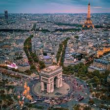

Paryż

Paryż, stolica Francji, to globalne centrum sztuki, mody i gastronomii, położone nad rzeką Sekwaną. Miasto jest podzielone na 20 ponumerowanych dzielnic (arrondissements), które rozchodzą się spiralnie od centrum.
Rzym
Wieża Eiffela

Wieża Eiffla to najbardziej rozpoznawalny symbol Paryża i jedna z najczęściej odwiedzanych płatnych atrakcji turystycznych na świecie. Zbudowana z okazji Wystawy Światowej w 1889 roku, pierwotnie miała zostać rozebrana po 20 latach, jednak dzięki swojej użyteczności dla radiokomunikacji przetrwała do dziś.
Łuk Triumfalny

Łuk Triumfalny (Arc de Triomphe) to jeden z najbardziej rozpoznawalnych symboli Francji, położony na placu Charles de Gaulle (dawniej Place de l'Étoile) na zachodnim końcu Pól Elizejskich. Monument upamiętnia osoby, które walczyły i zginęły za Francję podczas wojen rewolucyjnych i napoleońskich.
>